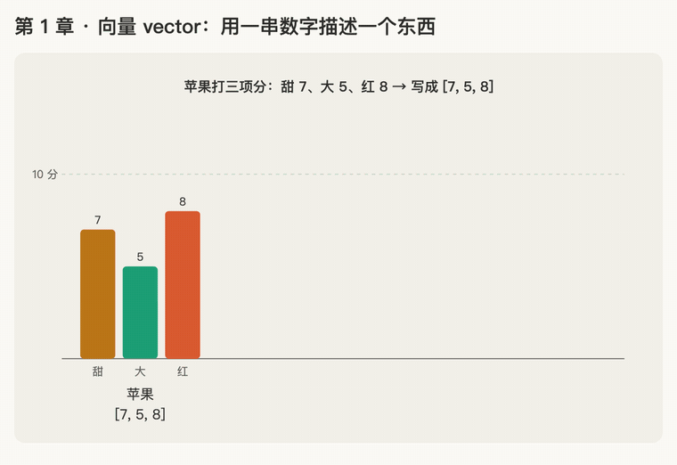
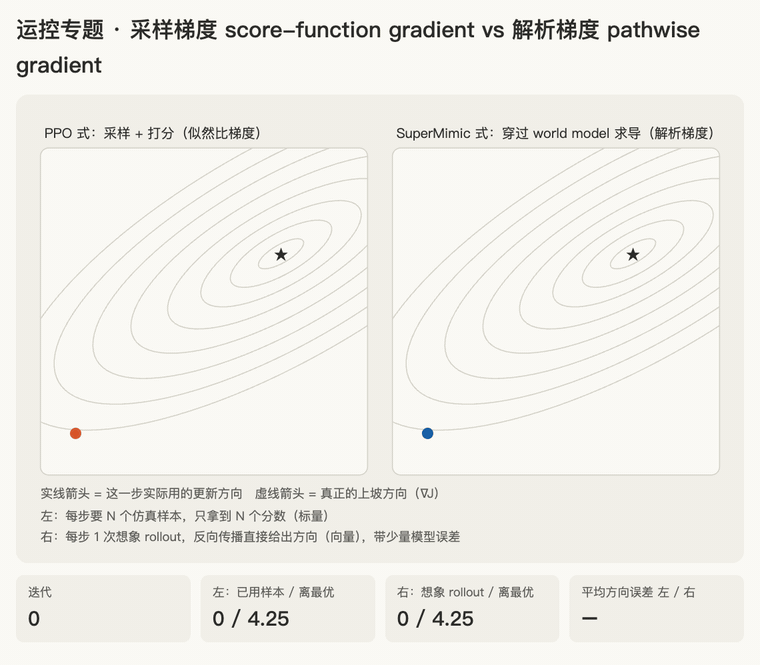

Physical AI 0-1-♾️
14 本对话式讲义：一次讲一个小概念，白话类比 → 公式 → 例子，每章配可交互动画和复习卡片。共 216 章、234 个动画、549 张复习卡片。
每本书的章节结构相同：本章回答的问题 → 讲解 → 练习与作答记录 → 口诀 → 复习卡片 → 延伸阅读。动画页可以 ▶ 播放、→ 单步、↺ 从头开始，有滑块的能拖参数。讲义来自个人学习仓库的对话留档，含练习作答记录。
大模型基础

从向量、点积讲起，一步步走到论文《Attention Is All You Need》第 3 节的完整 Transformer。共 24 章，每章配一个动画。

《从零读懂 Transformer》的续篇：从 2017 年的原版出发，讲训练基础、零件升级、现代大模型配方、MoE、高效注意力、线性注意力与 Mamba、视觉 Transformer。计划 51 章，已写 9 章。
训练系统与 GPU

从一行 y = x @ w 在 PyTorch 里经过了什么讲起：Tensor 内存布局、分派器、自动求导、GPU 异步执行、torch.compile，再到典型用法、常用算子、多机多卡、训练调优和融合算子开发。共 36 章，每章配一个动画。

从一个 for 循环怎么交给成千上万个线程讲起，一步步走到 2026 年 AI kernel 的前沿：线程层级、warp、内存层级、合并访存、occupancy、roofline、GEMM、Tensor Core、Hopper / Blackwell、FlashAttention。共 27 章，每章配一个动画。
强化学习

从小狗看到举手、坐下、拿到零食讲起，一步步走到训练机器人和大语言模型用的 PPO、GRPO：回报与折扣、马尔可夫决策过程、价值函数与 Bellman 方程、TD、Q-learning、DQN、策略梯度、Actor-Critic。共 24 章，每章配动画。

《从零学强化学习》的续篇：从 PPO 接着讲，经过运控分层与 PD 接口、动作跟踪、PPO 配方、仿真到真机、动作模仿、GRPO 与信用分配、算力账、两种梯度、可微 world model、BPTT + critic，拼出 SuperMimic；第二部分补上 LQR、ZMP、凸 MPC、iLQR / MPPI、AMP、SHAC 和上真机。共 18 章，每章配动画。
具身智能

VLA（Vision-Language-Action：视觉 / 语言 / 动作模型）从零讲起：机器人策略、行为克隆、动作分块、多峰、VLM、动作当词、FAST、π0，再往知识隔离和 RL 后训练走。连载中，已写 14 章，每章配动画。

世界模型回答「做了会怎样」，世界动作模型（WAM）回答「该做什么」。从这两个问题讲起，走过联合生成的训练和推理、2026 年下半年的新进展（推理时不想象、慢想象快动作、长上下文、开源模型与榜单），最后把各流派放到一张地图上，落到选型。共 13 章，每章配动画。

从 WAM 和 VLA 差在哪讲起，依次走过 NVIDIA GR00T 2 白皮书的架构、三阶段预训练、数据配方、跨本体迁移、RL 后训练、agent 协作、人形部署、真机评测方法和开放问题。共 11 章，配动画。

Google DeepMind 用 18 个月把 Gemini 接到了机器人身上：具身推理模型 ER 当大脑、VLA 当手，后来加上本地小模型、人形全身控制、多机协作，最后连通用前沿模型 Gemini 4 Argon 也进场当研发引擎。从 2025-03 的 1.0 读到 2026-11 的 2.5，拆开每一代改了什么、为什么这样设计。连载中，计划 14 章，已写 1 章，每章配动画。

机器人能不能自己变强？从「生成经验 → 打分筛选 → 更新自己」这个闭环讲起：VLA 为什么需要强化学习、奖励从哪来、怎样在 WAM 的想象里练、Agentic 怎样替人管闭环，以及递归自改进（RSI）的四个层级。连载中，计划 14 章，已写 1 章，每章配动画。
机器人系统

从一台机器人 = 一组快慢嵌套的闭环这张总图讲起，按骨肉 → 神经 → 反射 → 思考 → 机器之外的顺序，拆开运动学、执行器、传感器、电气与计算、底层控制、ROS 2、自主栈、仿真与数据、安全与整机案例。共 10 章，每章配动画。

ROS 2 不是操作系统，是机器人各部分之间的管道。先用 turtlesim 和命令行看清节点、话题、服务、参数、动作，再写包和节点，一路走到 QoS、executor、tf2、URDF、ros2_control、Nav2、MoveIt 2 和策略部署。共 20 章，每章配动画。

同一个 VLA 放到机器人身上：一次只有一个请求、必须准时、电和散热有限、网会断。从这些约束讲起，看懂 Jetson Orin / Thor 的容量、带宽和打折后的算力，不跑代码先估出最快多少 Hz，再走过量化、TensorRT 与 CUDA Graph、异步推理与动作块衔接、功耗与端云分工，最后把一个 π0 级 VLA 装上机器人。共 8 章，每章配一个动画。
联系与合作
欢迎来信：wikieden@gmail.com。可以合作的方向：
- 讲义勘误与建议
- 课程 / 企业内训
- 内容合作与转载授权
- 赞助本系列持续更新
赞助请发邮件联系。